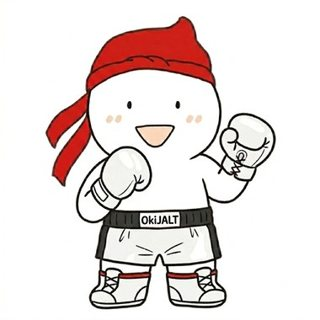
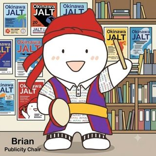
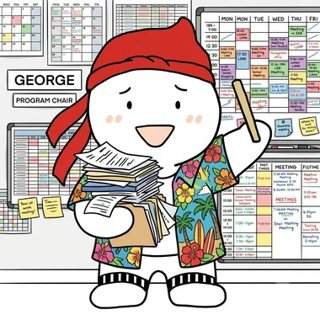
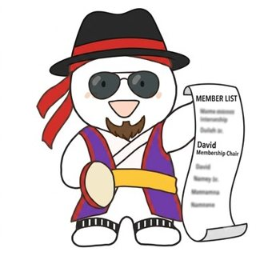

2026 Chapter Update
New administration, new direction, new energy. A look at what Okinawa JALT has accomplished, what has been approved, and what is coming next.

A Message to Our Members
From the President
Dear Okinawa JALT Members,
It has been an extraordinary first few months, and this newsletter is our first formal update to the membership. The pace of progress has surprised even us.
We have expanded the executive team with three new positions (Vice President, Publications Chair, and Professional Development Advisor), and our digital presence has been completely overhauled: a redesigned website with teaching and research resources, a YouTube channel with over 15,000 videos, a live podcast with 20+ episodes, a twice-weekly blog, and an active LinkedIn newsletter. We are also on Instagram, X, Facebook, SoundCloud, Pinterest, and Flickr.
Six executive proposals have been approved, covering an awards and recognition program, new membership tiers, strategic partnerships, officer expansion, a new advisory framework, and the Okinawa JALT Journal. Our first formal academic publication is now in preparation with Brian Gallagher as Editor-in-Chief, targeting early 2027. Two presenter databases (246 and 288 scholars respectively) have been created and shared with chapter presidents nationwide.
Everything you will read here reflects the work of a dedicated team and an extraordinary community. Nini and Nene are making their presence felt everywhere, and so are we. We look forward to building everything ahead together with you.
Norman Fewell
Chapter President, Okinawa JALT · 2026

🏆 Congratulations
David Kluge Receives the JALT Lifetime Achievement Award
Our Membership Chair has been awarded the highest honor granted by the Japan Association for Language Teaching, recognizing decades of selfless service, mentorship, and leadership in Japan and right here in Okinawa. Please join us in congratulating David on this well-deserved milestone!
🏅 Congratulations
Brian Gallagher: Best of JALT, Okinawa Chapter
Congratulations to our Publicity Chair and Editor-in-Chief on being named Best of JALT, Okinawa Chapter, for his presentation “Accept As Is: Crafting Acceptable Academic Abstracts.”

Meet the Elected Officers
2026 executive team

Norman Fewell
“Fighting for a stronger, bolder Okinawa JALT: gloves on, ready to go.”
Norman Fewell teaches at Meio University in Okinawa and has a long history of involvement with JALT and the Okinawa Chapter. He has served the chapter as President, Publicity Chair, and Program Chair.
As Chapter President, Norman has driven the new administration's agenda from day one: six approved executive proposals, a complete digital transformation, new academic publishing initiatives, and a fresh, forward-looking vision for Okinawa JALT.
Eng Hai Tan
“Every coin counted, every budget balanced: the chapter is in good hands.”
Eng Hai Tan teaches at Meio University and is a long-term member of the Okinawa JALT community. With an undergraduate background in mathematics, he brings a careful, detail-oriented approach to the role.
As Treasurer, he oversees the chapter budget, manages financial reporting to JALT National, and provides the financial foundation for every chapter initiative, from conference planning to journal publishing to membership support.

Brian Gallagher
“Getting the word out, one poster, one podcast, one post at a time.”
Brian Gallagher teaches at Meijo University and is one of the most active contributors to the JALT community. He is currently President of the JALT CALL SIG and host and editor of the JALTCALL Podcast. He previously edited the Okinawa JALT Trends in Language Teaching 2022 Post-Conference Proceedings.
As Publicity Chair, Brian manages all chapter marketing, communications, and event promotion. He is also the Editor-in-Chief of the new Okinawa JALT Journal, launching in early 2027.

George MacLean
“Every great conference starts with a great program, and I have the calendar to prove it.”
George MacLean teaches at the University of the Ryukyus and has been active in Okinawa JALT for many years, serving multiple terms as Chapter President and as a co-organizer of the PanSIG 2016 International Conference.
As Program Chair, George coordinates the academic program for all Okinawa JALT events: the call for submissions, presenter coordination, and session scheduling for the Global Summit, the December International Conference, and the Okinawa STEAM International Conference 2027.

David Kluge
“Every great chapter is built on its members.”
David Kluge is one of the most respected figures in the JALT community, with a long record of service at the chapter and national levels. He is the founder and Conferences Chair of the Performance in Education SIG (PIE SIG) and a co-founder of the JALT CALL SIG, and played a central role in building the partnership between Okinawa JALT and the PIE SIG.
As Membership Chair, David oversees the growth and retention of the chapter's membership base and the rollout of new membership tiers.
What We Have Accomplished
Summer 2026
Awards, membership, partnerships, officer expansion, advisory boards, and a new journal.
The most comprehensive governance overhaul in chapter history, approved internally by the executive team.
Plus hundreds of TESOL and applied linguistics concept slides for educators and students.
246 in the General Database and 288 in the JALT Associated Directory, shared with chapter presidents nationwide.
Global Summit (October), International Conference (December), STEAM Conference (February 2027).
Website, blog, Instagram, X, Facebook, LinkedIn, YouTube, SoundCloud, Pinterest, and Flickr.
Representing Okinawa JALT at the National Level
Membership Chair David Kluge represented Okinawa JALT at the JALT Executive Board Meeting held in Fukuoka in June 2026, at the request of Chapter President Norman Fewell. At the EBM, David presented the new Okinawa JALT administration and its agenda to the national body. He also attended the JALT Chapter Presidents Basecamp on June 10, where he introduced the new administration and distributed two original presenter databases created by Okinawa JALT.
“I will do my best to faithfully represent Okinawa JALT.” David Kluge
Meet the Chapters at the JALT International Conference
Okinawa JALT will take part in the Meet the Chapters session at the JALT International Conference in Nagoya this November, a chance for chapters from across Japan to showcase their activities, events, and publications. Stop by our poster, say hello, and hear about our upcoming events and the new Okinawa JALT Journal. Our chapter representative will be announced; follow our channels for updates.
Six Approved Executive Proposals
Introduced by the Chapter President and approved by the Okinawa JALT executive team: the most ambitious development agenda in the chapter's recent history
Local Awards and Recognition Program
- Conference awards at every event: Best Presenter, Best Poster, Outstanding Innovation in Teaching, Outstanding Service
- Annual Volunteer of the Year Award
- Okinawa JALT Lifetime Achievement Award: the chapter's highest honor
- Okinawa JALT Dedication Awards for 10 years and 15+ years of outstanding service
- Awards and Recognition Council forming
- Inaugural ceremony at the Okinawa STEAM International Conference (February 2027, Naha)
- Retroactive recognition for all currently eligible members
Membership Diversification and Growth
- Student Membership: reduced or free with volunteer commitment
- Retiree / Gold Membership (65+): complimentary
- Digital-Only Membership: ¥5,000/year with access to conference recordings
- Lifetime Membership: premium one-time fee (to be determined)
- Honorary Membership: by invitation for distinguished scholars
- Welcome packets and mentorship pairings for all new members
- Outreach to students, ALTs, JETs, and retired educators
Strategic Partnership Expansion
- Renew and strengthen all existing MOUs with current partners
- Pursue new JALT chapter and SIG partnerships across Japan
- Expand Asia-Pacific organizational ties with regional ELT associations
- Dedicated Partnerships Committee under the Affiliations Chair
- Target: a minimum of 3 new formal partnerships by end of 2026
- All active partners featured at major chapter events
Officer Position Expansion
- Vice President: Koji Namihira (Meio University)
- Publications Chair: Adam Murray (University of the Ryukyus), supporting chapter publishing
- Professional Development Advisor: Roy Kemm (Meio University), focused on member learning and growth
- One-year renewable terms for all new positions
Advisory and Leadership Framework
- Presidential Council: all former Chapter Presidents, providing mentorship and continuity
- Executive Council: all former elected officers, providing strategic advisory support
- Intercollegiate Advisory Board: one faculty representative per major Okinawa university
- Honorary Board of Advisers: Professors Emeriti, distinguished scholars, community leaders
Okinawa JALT Journal
- Annual open-access practitioner journal and official conference proceedings outlet
- Audience: language educators, ALTs, university faculty, graduate students
- Digital-first with rich media; print-on-demand via Amazon KDP
- APA 7th Edition throughout
- First issue to be published in early 2027
- Editorial team being recruited: okijalt@gmail.com
See these in action: Local Awards · Membership Tiers · Partnerships · Advisory Boards · Journal
Constitutional Reform: 2026 Revision
40+ changes, a living document
The most comprehensive revision of the Okinawa JALT Constitution and Bylaws in the chapter's history was completed and approved internally at the executive working session of May 26, 2026. Discussions and refinements will continue throughout the year. Once the constitution has been fully polished, it will be made available to all chapter members to review and to vote on at the appropriate general meeting. The final document will be posted on this website. Until then, the current constitution remains in force.
SIG to IG rename
Chapter-level Special Interest Groups renamed Interest Groups (IGs) to avoid confusion with JALT National SIGs.
One-day membership eliminated
Fully removed from the constitution and bylaws in all forms.
Election ballots (Bylaw IV §4a)
New subsection modeled on JALT National; all candidates listed with a mandatory write-in line on all ballots.
Succession planning (Bylaw XVIII)
Expanded with three sections covering candidate recruitment, succession procedures, and interim appointments.
Code of Conduct (Bylaw XIX)
Formal adoption of the JALT National Code of Conduct, prohibiting harassment and demeaning conduct at all chapter events.
AGM format and quorum
The AGM now includes in-person and online participation. Quorum is defined as an adequately announced meeting.
Term limits confirmed
The 3-year maximum applies equally to all officers, including the Treasurer.
Publications Chair formalized
Confirmed as an established position under Bylaw II §6, supporting all chapter publications.
Presenter Databases: Created and Shared Nationwide
Shared with all JALT Chapter Presidents at the Chapter Presidents Basecamp, June 10, 2026
Okinawa JALT created two validated presenter databases to support speaker outreach for conferences, the Okinawa JALT Journal, and cross-chapter collaboration, a tangible contribution to the national JALT network from the first months of the new administration.
General Presenter Database
Selected by prominence and number of publications. Japan-affiliated, English-medium, sorted by location. Top city: Tokyo (124 scholars). Other hubs: Kyoto (32), Chiba (25), Sendai (25), Osaka (9).
JALT Associated Presenter Directory
Scholars with active JALT affiliation, with publication counts included and sorted by location to support inter-chapter collaboration and event programming across the JALT national network.
Digital Presence & Branding
Mostly live now
Website
OkiJALT.org has been rebuilt with a modern, responsive design: improved navigation, a dedicated events section, updated membership information, and an expanding teaching and research resources library.
Live nowYouTube
Over 15,000 videos covering language teaching methodology, classroom strategies, research presentations, and professional development, plus hundreds of video slides on key TESOL and applied linguistics concepts.
Live nowPodcast
20+ episodes on language teaching practice and research, interviews with educators and scholars, and event previews. Find it on SoundCloud.
Live nowBlog
Updated twice a week with chapter news, event announcements, teaching insights, member spotlights, and commentary. okinawajalt.blogspot.com
Twice weeklyLinkedIn newsletter
Published twice a week for members, partners, and followers who prefer a professional platform. linkedin.com/in/okijalt
Twice weekly
PIE SIG / OkiJALT Friday Zoom Get-Together
A pandemic-era lifeline that became a tradition
Okinawa JALT co-hosts a regular Zoom get-together (1st and 3rd Fridays of each month) with our friends at the PIE SIG. This informal gathering began during the COVID-19 period to provide camaraderie and human connection during a very difficult time for educators, and has grown into a beloved standing tradition: a relaxed, collegial space to connect, share ideas, and enjoy good conversation. No agenda, no pressure, just community. Invitations go out to over 125 language and education professionals across Japan and beyond, and every OkiJALT member receives an invitation the Thursday before the event.
What's Coming Next
Rest of 2026 and beyond
- Oct 9–11, 2026Chapter Conference & Global Summit 2026Naha, Tiruru, during the Naha Great Tug-of-War Festival. Read the record →
- November 2026JALT International Conference: Meet the ChaptersNagoya. Find our poster and say hello.
- Dec 26–28, 2026International Conference on Trends in Language TeachingNaha. Details & call for presentations →
- Feb 25–28, 2027Okinawa STEAM International Conference & Inaugural Awards CeremonyLead sponsor PIE SIG; co-sponsored by Okinawa JALT and JALT CALL SIG. The first Okinawa JALT Awards Ceremony, with the Lifetime Achievement Award and the Dedication Awards, takes place here.
- Early 2027Okinawa JALT Journal, Volume 1Open access. Editor-in-Chief: Brian Gallagher. Editorial recruitment under way. Journal page →
- Oct 8–10, 2027Global Summit 2027Naha, with the 57th Great Tug-of-War. Details →
Connect With Us
All platforms active
📝 Blog
okinawajalt.blogspot.com
News, insights, and member content, twice a week.
▶️ YouTube
@okinawajalt
15,000+ videos and TESOL concept slides.
🎵 SoundCloud
OkiJALT Podcast
20+ episodes: discussions, interviews, previews.
@okinawa_jalt
Events, Nini and Nene, chapter life.
𝕏 X
@OkinawaJalt
Real-time announcements.
facebook.com/okinawaJALT
Event pages and community discussion.
linkedin.com/in/okijalt
Newsletter twice a week, partnerships.
okijalt@gmail.com
Questions, ideas, volunteering.
Also on Pinterest and Flickr. Know a platform we should try? Email us!